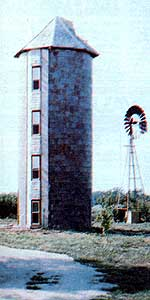
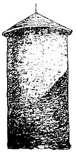

One October evening in 1978, my brother and I - inspired by the bright chill that had already begun to flavor the air - were discussing the fact that a one-level house often loses much of its heat through the roof. It would surely, we thought, be more energy-efficient, and thus economical, to warm an abode in which the rooms were stacked on top of one another, letting the heat work its way up through the living space.
As the night wore on, my sibling told me that he’d once considered building just such a house - and doing so in an abandoned silo - because, with the basic structure already in place, the cost of remodeling would be far less than would building from the ground up (and up, and up )! Later, I shared his idea with Helen, my wife, and (as I’d hoped) she became so excited about the concept that we were soon setting off in search of an unused fodder-holder.
We made a full sweep of the country roads around our home in Pittsburg, Kan., but most of the silos we saw were made of ugly gray concrete block wrapped with metal bands. Persistence paid off, though: We finally found the perfect structure, built of glazed and glistening red-clay tile, perched on the crest of a hill like a lookout. There was a grain-chute opening on its south side, which, we felt sure, could be adapted to accommodate a few sun-catching windows. Full of enthusiasm, we went to explore the inside of the 14-foot-diameter cylinder, and looked up to see ... blue sky. Obviously, one of our first jobs would be to put on a roof.
Within two weeks we’d located the silo's owner, and - because [1] he wasn’t using that land and [2] we’d be putting our own money into the renovation - he offered us a free, and renewable, five-year lease. By that time, though, it was already early November, and winter was all too close.
I began work by making an excavation to house a septic tank and drainage lines. While I was at it, I also dug a ditch from the silo to a (happily) nearby wind pump and well and put in a waterline. Then, since we wanted easy access to our future home, we chose a spot on the silo’s west side and cut out a front door opening, using a specially made concrete saw.
Our next project, the roof, was a real challenge. In order to assure safe working conditions, I first built a platform that sat on top of the structure. It took me an hour of scooting around the rim - 40 feet up, in sleeting weather - to mark the edges so that my big scaffold wouldn’t overlap the points where the rafters would later sit. Then, one by one, Helen tied the planks to a rope, and I hauled them up.
Once the platform was assembled, I constructed an eight-sided, tipi-shaped wooden frame and spent a number of consecutive weekends sheeting, tar-papering and shingling seven of the roof’s eight sides. I covered the last section (where we planned to build a balcony the following spring) with plastic.
At that point we realized that we were about to be involved in a race to pour concrete in the base of the silo before freezing weather came to stay, but first it was necessary to dig out three feet of soft earth - and when you’re working in a 14-foot-diameter hole, that’s a lot of dirt to move by hand. Fortunately, however, we got the job finished in time (barely!).
Freezing weather or not, we then went on to break away the old grain chute piece by piece with a sledgehammer and nail short boards, each at an angle, on both sides of the opening to add a decorative touch. Next, we bought four long, narrow windows and built a shingled awning to be positioned above each one. The installation involved tying an awning onto a rope, climbing the bars that led up the slot, pulling up the awning, nailing it in place, climbing back down to tie on a window, hauling up the window, nailing it in place ... and so on, until the task was completed!
We finished our window wall in mid-January, and the weather had turned pretty danged cold by then! With plywood propped over the entrance (until we could afford a door), the inside of the silo provided at least some refuge from snow and slashing wind, but - in order to continue working - we knew we’d have to get our woodburning stove out of layaway. It was soon set in place on the concrete slab, and I stacked the stovepipe 40 feet high and ran it through the flashing I'd incorporated into the roof for that purpose. (Of course, I used the appropriate insulated stovepipe, so there'd be no danger of fire when the floors were put in.)
Then, with a good cozy fire roaring, I was much more eager to start figuring how to contrive strong round floors out of straight lumber designed for use in rectangular houses. My solution to that problem was to space four wooden columns evenly around the circumference of the solid concrete pad. Next, I built a wooden square that rested on top of the columns, and nailed stringers every 16 inches until the square was filled. Then, to make a circle, I stood a board up along the wall between each pair of columns and set another board atop each one to span diagonally to a support. Finally, sheets of plywood were cut on a curve and nailed into place, and we had a sturdy circular floor.
Another quartet of columns was then placed directly above the first, and floor after floor gradually came into being. This fairly simple procedure was complicated, however, by the need to leave openings for a stairway that would spiral a quarter of a circle around the inside wall for each floor - making nearly one full twist before it reached the top.
I’d never built a set of stairs in my life, but since 48 steps rise from the first floor of our silo to the balcony, I gained plenty of practice - and, I must admit, they looked better and better as I got closer to the top.
By the time the staircase was complete it was spring, and we were able to finish the balcony by making a cantilevered, wooden platform - covered with a 4-by-8-foot sheet of plywood - which we secured with interior bracing. Its inside half was sheltered by a shingled A-frame section boasting two skylights. We then installed a door and a railing with a gate that would allow us - in case of fire - to climb down an adjacent ladder, which the silo's original builders had strung up the side of the structure.
With the basics out of the way, we began to concentrate on turning the 50-year-old cylinder into a comfortable house. A partition on the second floor served to separate the bathroom from the kitchen area, and we installed inside plumbing. Then we bought a submersible deep-well pump, hooked it up to 50 feet of pipe, lowered it into the casing of the well under the windmill, and came up with a seemingly inexhaustible supply of clear, free water.
Thanks to my dad and brother’s help, I finished the necessary electrical wiring in one weekend, and we were suddenly able - as we went from the first floor to the fifth - to turn on a light above and flip off the light below at each level.
In mid-May we were six weeks away from our projected moving-in date. We spent the rest of the time wallpapering the kitchen/ bathroom partition, installing cabinets, putting up plasterboard and texturing the ceilings, and laying carpeting and linoleum.
After settling in, we used our evenings and weekends to add a few finishing touches. Just $6,500 and 800 work hours from our starting point, the first floor had become a sunken living/dining room. From there three steps lead up to the front door and the stairs to the kitchen and bath. The third floor became the bedroom, the fourth, an art studio for my wife, and the fifth, storage space and my study. The spiral staircase rises the final four feet from that level to the balcony.
As you can imagine, we had to maintain a “squeaky tight” budget during the months it took to transform that hollow shell into a lovely home. But once we moved in, we had no rent or house payment, no water bill, and, because we cut our own wood, no fuel bill. Our monthly utilities totaled less than $30: some $20 for electricity and about $7 for our telephone.
I use the past tense because, last January, we adopted 4r-year-old Charlie, who loved our cylindrical home as much as we did. However, we soon realized that with a new addition to our family, we needed more space and (most of all) a laundry room. So this past August we moved into a big old house in town and rented our tower to a young couple for $225 a month, out of which we pay a voluntary $50 to the landowner.
The new residents report that they’re enjoying silo living as much as we did - and you just might, too!
Be aware that some modern silos have been sealed with PCB-containing material, so it’s wise to choose an older model for a live-in project. - Mother
|
 GLENN WORTHINGTON This silo was converted into a cozy home for only $6,500 and a winter of work. |
 GLENN WORTHINGTON Cheaper than a conventional house and beautifully unique, an old silo can be an excellent choice for a home. |
|